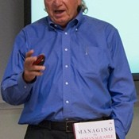

Managing Software People and Teams

Workshop detail
This one-day master workshop will be presented by Mickey Mantle and Ron Lichty, based upon their best-selling book Managing the Unmanageable – Rules, Tools, and Insights for Managing Software People and Teams.
Published by Addison-Wesley, the book has been recommended as one of the top three books that every programming manager should have on their bookshelf. All workshop attendees will receive a copy for their continued reference and bookshelf.
Code Stars Summit provides a rare public opportunity to learn directly from Mantle and Lichty what they share with their corporate clients.They have distilled the most important insights from their book to create this workshop for software development managers, software team leads, programmers who aspire to become managers, project managers, and those who manage departments of programmers – as well as other Managers, Directors, and C-level executives who rely on programmers to deliver projects that are critical to their organization’s success so need to learn themselves how to manage programmers successfully.
This workshop will inform, engage, and delight, driving home key messages from the book by:
- Peppering managing precepts with software rules of thumb
- Engaging the audience in interactive learning
- Conducting hands-on activities that translate theory into practice
- Soliciting audience stories and experiences for real-world input
- Digging into tools provided with the workshop with tips on customizing them for personal use
Ron Lichty
www.ronlichty.comRon Lichty has been managing and, more recently, consulting in managing software development and product organizations for over 25 years. Before that, as a programmer, he coded compiler code generators, was awarded patents for compression and security algorithms for embedded microcontroller devices, wrote 2 widely used programming texts, and developed the computer animation demo that Apple used to launch and sell a next-generation line of PCs. The primary focus of his consulting practice has mirrored what he did as a manager: untangling the knots in software development. As Ron Lichty Consulting, he takes on fractional Interim VP Engineering roles, trains teams and executives in scrum, transitions teams to agile, trains and coaches managers in managing software people and teams, and advises organizations and coaches teams to make their software development “hum.” His 450-page book, Managing the Unmanageable: Rules, Tools, and Insights for Managing Software People and Teams, was recently released as video training - LiveLessons: Managing Software People and Teams - both from Pearson and on O’Reilly’s Safari Network. He also co-authors the periodic Study of Product Team Performance.